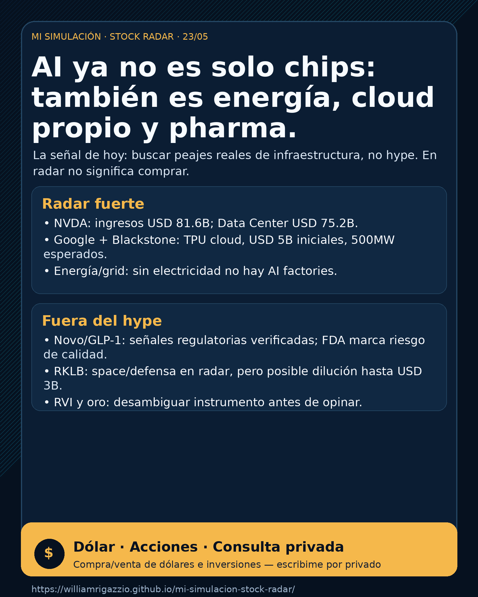

{kind=link}
Núcleo
NVDA
Revenue y Data Center récord.
NVIDIA sigue siendo núcleo, pero el radar mira TPU cloud, megawatts, grid, GLP-1 y space con financiamiento. En radar no significa comprar.

Compra/venta de dólares e inversiones — escribime por privado. El reporte público es informativo; decisiones personales se conversan caso por caso.
La lectura simple: la inteligencia artificial sigue siendo una tesis enorme, pero el mercado ya no se mira solo por el chip. Hoy hay que mirar tres peajes físicos: compute, energía y capital.
Esto no es una orden de compra. Es un mapa para separar “empresa con moat” de “ticker con hype”.
La tesis de hoy es: AI se ensancha desde chips hacia infraestructura física. NVIDIA sigue siendo el núcleo más fuerte, pero Google/Blackstone muestran que también compiten los clouds con hardware propio; energía y grid pasan a primer plano; pharma/GLP-1 sigue siendo un carril de plata real fuera de AI; y Rocket Lab queda como space/defensa con señal mixta: validación operativa más riesgo de dilución.
Traducción directa para Charly y para el lector común: si aparece “en radar”, significa mirar con atención, no comprar. La decisión humana necesita precio, horizonte, monto, cartera, liquidez y tolerancia al riesgo.
NVDA — NVIDIA: señal fortalecida, moat de máxima calidad.
NVIDIA reportó Q1 FY2027 con ingresos de USD 81.6B, +85% interanual, y Data Center de USD 75.2B, +92%. También autorizó recompra adicional de USD 80B y subió el dividendo trimestral de USD 0.01 a USD 0.25. La tesis sigue fuerte; el riesgo es valuación/exigencia del mercado.
Fuente: https://nvidianews.nvidia.com/news/nvidia-announces-financial-results-for-first-quarter-fiscal-2027
GOOGL / BX — TPU cloud y data centers: señal estructural.
Google informó una joint venture con Blackstone para crear un TPU cloud: Blackstone compromete inicialmente USD 5B de equity y se espera 500MW online en 2027; Google aporta TPUs, software y servicios. Esto refuerza que la pelea de AI no es solo GPUs: también es cloud propio, energía y capacidad de data center.
Fuente: https://blog.google/innovation-and-ai/infrastructure-and-cloud/google-cloud/blackstone-tpu-cloud/
Energía / grid — NEE, D, CEG, VST, ETN, VRT: radar fuerte.
La tesis energética queda fortalecida porque AI necesita electricidad, interconexión, cooling y transmisión. NextEra/Dominion aparecieron en fuentes SEC como combinación orientada a gran escala regulada y mercados de large-load/data centers. CEG/VST/ETN/VRT quedan como watchlist de infraestructura física, pero no como compra automática.
Fuentes: https://www.sec.gov/Archives/edgar/data/753308/000110465926063003/tm2614888d1_8k.htm y https://www.sec.gov/Archives/edgar/data/715957/000119312526229172/d28520d425.htm
TSM / ASML / MU — cuello de botella estructural.
No fueron la noticia nueva más fuerte de esta mañana, pero siguen siendo parte del peaje físico: foundry avanzada, litografía EUV/High-NA y memoria/HBM. Estado: seguimiento estructural, no señal nueva de compra.
Pharma/salud — NVO y LLY: carril de plata real fuera de AI.
Novo Nordisk tuvo señales primarias vía SEC/6-K: CHMP recomendó oral Wegovy/semaglutide 25 mg en la UE como primer GLP-1 oral para weight management, y también Wegovy 7.2 mg con 20.7% de pérdida media de peso en STEP UP. La FDA publicó warning letter a un proveedor chino de semaglutide API: esto marca riesgo de calidad/regulación en compuestos/no aprobados. LLY queda en seguimiento por GLP-1, pero esta edición no usa claims bloqueados/no verificados como titular.
Fuentes: https://www.sec.gov/Archives/edgar/data/353278/000117184326003634/f6k_052226.htm , https://www.sec.gov/Archives/edgar/data/353278/000117184326003645/f6k_052226.htm y https://www.fda.gov/inspections-compliance-enforcement-and-criminal-investigations/warning-letters/harbin-jixianglong-biotech-co-ltd-723330-05012026
RKLB — Rocket Lab: space/defensa en radar, con riesgo financiero.
SEC muestra un programa at-the-market / forward seller para vender acciones comunes por hasta USD 3.0B. Traducción: puede financiar crecimiento, pero también puede diluir. Estado: radar/seguimiento, no lectura limpia de compra.
Fuente: https://www.sec.gov/Archives/edgar/data/1819994/000181999426000044/rocketlabcorporation-424b5.htm
RVI / Gold / GLD / GOLD / B: separar instrumentos antes de opinar.
RVI está confirmado como Robinhood Ventures Fund I, un closed-end fund con objetivo de long-term capital appreciation; no es una operating company. En oro, no mezclar: GLD es SPDR Gold Shares; GOLD aparece como Gold.com, Inc. en este entorno; B corresponde a Barrick Mining Corp. Estado: seguimiento, requiere desambiguación antes de cualquier análisis.
Energía no es un apéndice: es una tesis central. Si los data centers crecen, alguien tiene que entregar megawatts, grid, transmisión, permisos y estabilidad. El carril de hoy es seguimiento fuerte, no compra automática. Lo que falta para decisión humana: precio, múltiplos, deuda, regulación, cartera, horizonte y riesgo país/sector.
Pharma entra por plata real, no por moda AI. Novo Nordisk tiene señales regulatorias verificadas en GLP-1 y la FDA muestra que la cadena de semaglutide/compounded products tiene riesgo de calidad. Lilly sigue en radar, pero esta edición evita repetir números no verificados por fuente oficial accesible durante la corrida.
Waymo/Alphabet, Tesla, Uber, Zoox/Amazon y Joby quedan en seguimiento, pero hoy no apareció una señal nueva verificable suficientemente fuerte como para desplazar a NVDA, energía, Google/Blackstone o pharma. Estado: radar estructural, no titular.
Rocket Lab es el punto público accionable dentro de space, con señal mixta. SpaceX/Starlink/SPCX siguen como carril central de observación, pero hoy no hay S-1/IPO/evento público verificable que lo convierta en instrumento directo para el lector común. Si aparece un proxy público real, se analiza; si no, queda como contexto educativo.
Dólar · Acciones · Consulta privada
Compra/venta de dólares e inversiones — escribime por privado.
Este reporte gratuito es informativo. No es asesoramiento financiero personalizado ni promesa de resultado.